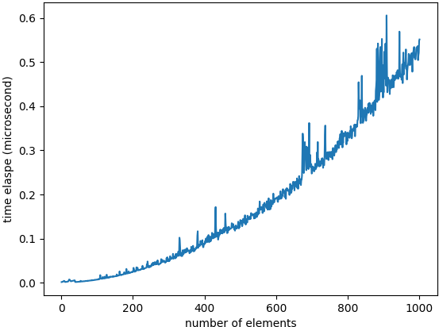

引论
1 经典问题
-
选择问题： 个数，选择其中的第 大者。其有两种直观的实现方法：
- 递减顺序排序，返回第 个位置的数。代码见 KSelector/sort_select1
- 读入前 个数到数组，以递减的顺序排序这 个数；随后逐个读入剩余的数，如果它小于数组中第 个数，则忽略之；否则插入到正确的位置上，这将挤掉数组中的第 个数。代码见 KSelector/sort_select2
- 字谜游戏
2 数学知识
2.1 基本公式
- 指数运算：
- 对数运算：
- 级数运算：
- 前 项和（设 ）：
- 前 项和在正无穷处的等价：
- 级数和（设 ）：
- 为常数
- （欧拉数）
- 前 项和（设 ）：
- 模运算：
- 设 ，记 当且仅当 满足
- 设 且有 ，则
2.2 证明方法
- 第一类数学归纳法
例：求证：证明：，定义布尔值函数
-
的证明：
由于 且
故当 时，\sum\limits_{i=1}^n i^2 = \dfrac{n(n+1)(2n+1)}{6} 故 - 设 ，假设 。在假设条件下 的证明： 由于 故
由第一类数学归纳法得：，
即
证毕。 -
的证明：
- 第二类数学归纳法
例：我们递归的定义数列 ： 求证：证明：，定义布尔值函数
-
的证明：
由于 且
故
故 - 设 ，假设 。在假设条件下 的证明：
根据假设，，即： 故 故
根据第二类数学归纳法可得：。
即：
证毕。 -
的证明：
由于 且
- 反证法
例：求证：存在无穷多个素数。证明：假设结论不成立，即存在有限个素数。
设一共有 个素数。将所有素数从小到大排列得到的素数列记为
则 为最大的素数
考虑自然数
显然
故 不是素数。
另一方面，用所有的素数 去除 ，都不能整除，会有余数
故 是素数。
矛盾！
故假设不成立。
故确实存在无穷多个素数。
3 递归简论
递归的基本准则： 1. 基准情形（base case）：必须要存在一种情形，不需要递归就可以求解 2. 不断推进（making progress）：计算非基准情形时，递归调用一定要朝着基准情形推进 3. 设计法则（design rule）：在设计递归时，要假设每次递归调用都能按照期望运行并返回正确的结果 4. 合成效益法则（compound interest rule）：切勿在不同的递归调用中计算同一个实例（影响效率而不影响正确性） 例如递归求解斐波那契数列的算法是不好的，违反了第四条：
public static double Fibonacci(int n)
{
if(n <= 1)
return 1;
return Fibonacci(n-1) + Fibonacci(n-2);
}
4 Java 特性
略
5 习题
- 编写一个程序解决选择问题。令 ，画图显示程序对不同规模输入的运行时间。
程序见 KSelector/sort_select2
不同规模输入的运行时间图见下图
 - 编写一个求解字谜游戏问题的程序。
- 证明下列公式：
-
证明：，定义
则
故 在 上递减，在 上递增。
故 的最小值为
由于 且 为增函数，
故
故
故
-
-
计算下列各和：
解：
-
记 ，记
则 故 另一方面，由于 故 故 故 原式 - 求 在正无穷处的等价
解：